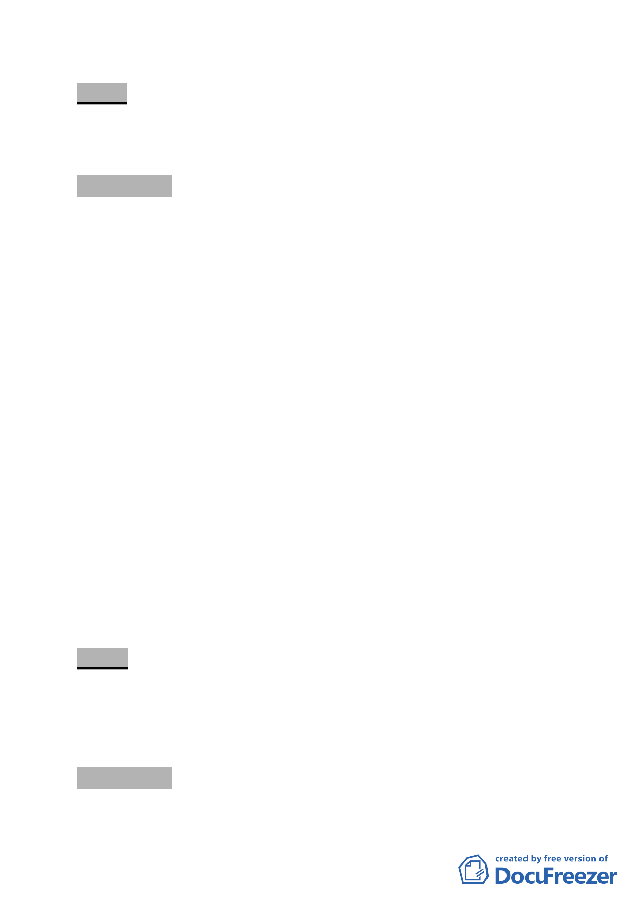

決議：本案暫予保留，請更新處續就西側鄰地 627、628 地號 2 筆
土地併納入更新單元劃定範圍，召開公辦協調會進行整合
與說明後，再續提本委員會議審議。
討論事項 五
案名：劃定臺北市信義區三興段三小段 159 地號等 21 筆土地為更
新單元
案情概要說明：
一、本案位於信義區嘉興街、嘉興街 181 巷東北側街廓內，面積
3076 平方公尺。
二、本更新單元土地使用分區為第三種住宅區，土地包括公有
（3.52％）及私有（96.48％），建物均為私有。
三、本案基地臨計畫道路側將退縮留設 2 公尺以上無遮簷人行
道。
四、本案市府 100 年 7 月 6 日以府都新字第 10030818700 號函送到會。
五、申請單位：袁陳月英。
六、辦理單位：臺北市政府。
七、法令依據：都市計畫法第 66 條；都更條例第 5 條、第 6 條、
第 8 條、第 11 條；北市都市更新自治條例第 15 條。
八、本更新單元前經市府審查符合更新單元劃定基準及環境評估
標準（指標三、八、九）。
決議：本案除計畫書第 7 頁整體規劃構想第 3 點依更新處意見修
正為：「更新單元北側及鄰計畫道路退縮留設 2 公尺以上無
遮簷人行道」，以與圖 3 一致，其餘更新單元劃定範圍照案
通過。
討論事項 六
案名：劃定臺北市大安區大安段一小段 153 地號等 24 筆土地為更
-8-